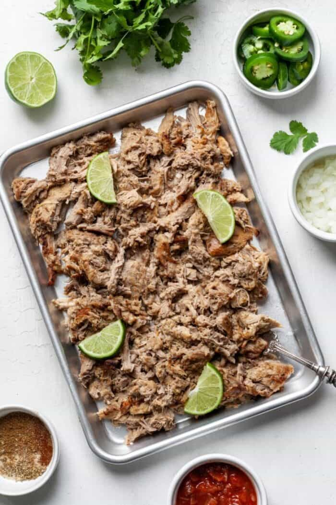

Carnitas

Description
A quick recipe that produces 3lbs of meat
Ingredients
- 3 lbs pork butt or shoulder
- 2 tbsp cumin
- 1 tbsp paprika
- 1 tbsp garlic powder
- 2 tsp onion powder
- 1/2 onion, finely chopped
- 1 cup chicken broth
- 1 cup water
- 2 tbsp lime juice
- 2 tbsp orange juice
- Optional: 1 chopped jalapeño
Steps
- Combine spices and rub pork
- Add ingredients to Instant Pot and pressure cook for 45 minutes.
- Allow pressure to release naturally, before shredding pork with 2 forks.
- Remove all but 1/2 cup liquid and sauté the pork until crispy. Discard excess liquid.
Voila!